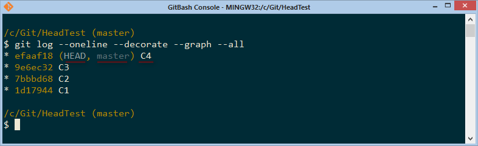
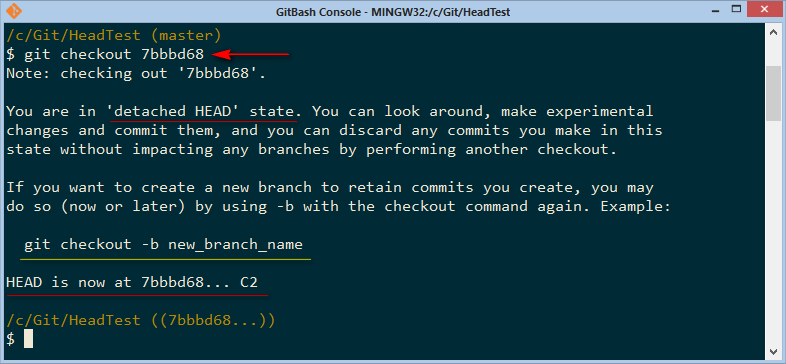
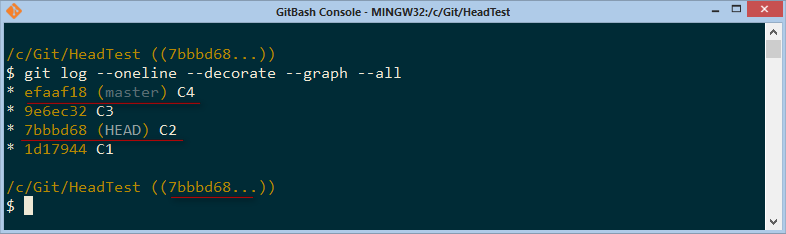
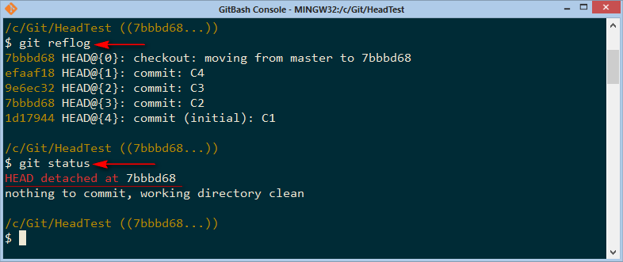
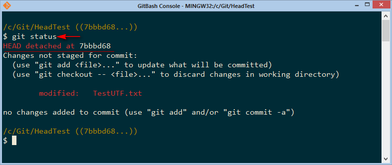
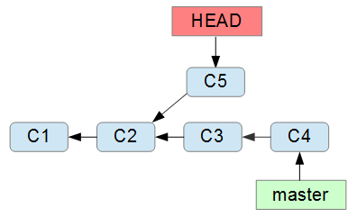
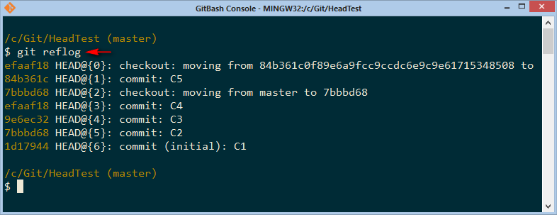
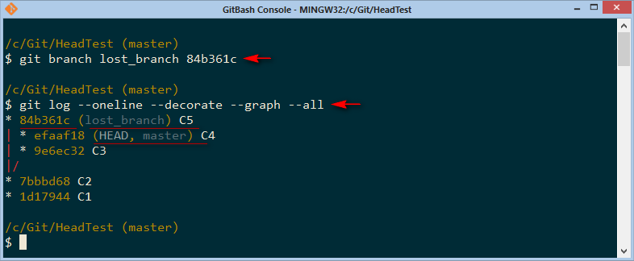
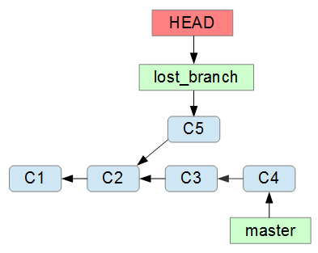

В этой статье пойдет речь про отсоединенное состояние указателя HEAD. Надо понимать что названия веток в Git - это указатели на коммиты. Имя ветки, допустим master, указывает на последний коммит в ветке master.
Существует так же множество других указателей и один из них HEAD. Это очень важный указатель. И вот о нем мы и поговорим.
Итак, у нас есть история коммитов:
И сейчас указатель ветки master и указатель HEAD указывают на последний коммит С4 в ветке master.
То же самое можно увидеть в Git:

Оба указателя master и HEAD указывают на коммит С4 (efaaf18).
Теперь передвинем указатель HEAD на коммит C2 командой
$ git checkout 7bbbd68

Вот мы и получили отсоединенный указатель HEAD. И Git нам любезно сообщил что снег башка попал…
На диаграмме это можно изобразить так:

То есть команда git checkout 7bbbd68 просто перенесла указатель HEAD на коммит C2 (7bbbbd68). И вместе с этим вернула в рабочем каталоге состояние файлов этого коммита. То есть мы откатились назад по истории коммитов.
И Git порекомендовал нам создать новую ветку, а так же сообщил хэш коммита на который сейчас указывает HEAD.
Все это можно увидеть в Git:

Состояние HEAD detached означает что HEAD указывает не на вершину какой либо ветки, а просто на какой-то коммит.
Посмотреть историю перемещения головы можно командой git reflog:

На скрине мы так же посмотрели состояние Git и он нам (аж красным) сообщил, что башка отсоединена на коммит 7bbbd68.
HEAD всегда должен указывать на вершину какой-либо ветки. Это очень важно. И вот почему.
Указатель HEAD по существу указывает на тот коммит, после которого будет сделан следующий коммит. И если в состоянии перемещенного HEAD мы сейчас сделаем еще один коммит, то у нас будет шанс потерять его, не в смысле что он будет не доступен, а что если мы не будем помнить хэш этого коммита, то мы ни когда не сможем на него переключится.
Давайте сделаем коммит и посмотрим что будет. Изменим файлик и посмотрим статус

Ну и делаем коммит

Из лога коммитов видно что сейчас HEAD указывает на коммит С5 (84b361c), но на этот коммит не указывает ни какая ветка, верней сказать ни какой указатель ветки.
Графически это можно изобразить так:

Мы по прежнему находимся в состоянии detached HEAD, о чем нам все время напоминает Git. Еще раз напомню что это означает что HEAD указывает не на вершину какой-либо ветки, а просто на коммит. В нашем случае на коммит С5 (84b361c).
Выйти из состояния detached HEAD очень легко, для этого надо переключится на какую-либо ветку или создать новую ветку.
Давайте переключимся на ветку master командой git checkout master

При переключении на ветку master, Git заботливо нас предупредил, что мы оставляем 1 commit, который не присоединен ни к какой ветке. Сообщил нам имя этого коммита – С5 и его хэш – 84b361c. И посоветовал, что возможно уже самое время создать новую ветку командой:
git branch new_branch_name 84b361c
Поскольку если мы сейчас не создадим ветку (указатель) на этом коммите, то мы можем его потерять.
Если сейчас дать команду просмотра лога коммитов, то мы коммит С5 в логе не увидим:

Таким образом мы можем “потерять” коммит С5, если забудем его хэш. Конечно, как уже говорилось, что в Git какой-либо сделанный коммит сложно потерять (но можно). И в данном случае мы можем посмотреть историю перемещения HEAD:

и в ней мы можем увидеть наш потерянный коммит, хотя мы его и не видели в истории коммитов (логе коммитов).
Теперь дадим команду
$ git branch lost_branch 84b361c
и посмотрим лог:

Теперь, все хорошо. На коммит С5 указывает ветка lost_branch
Графически это выглядит так:

Теперь мы легко можем переключится на ветку lost_branch и состояния HEAD deatached уже не будет, поскольку HEAD уже будет указывать на вершину ветки lost_branch.

Сейчас переключение произошло безболезненно, поскольку это вполне штатная работа в Git.
Ну и покажу это состояние графически:

На этом, с отсоединенным указателем HEAD пока все. Хотя есть еще варианты по отделению указателя HEAD в Git, но об этом как-нибудь в другой раз.